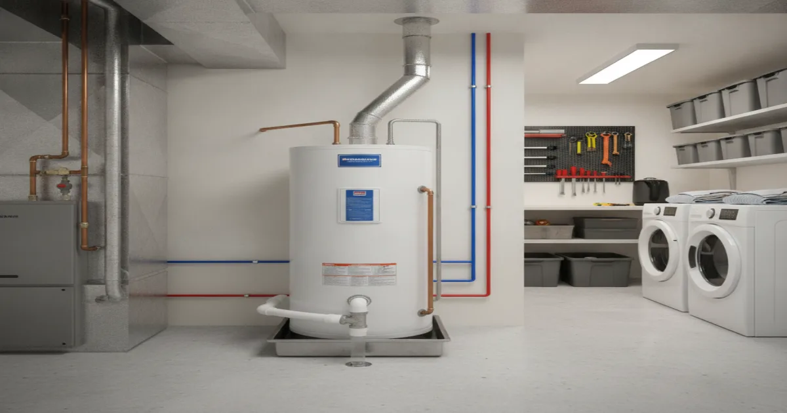
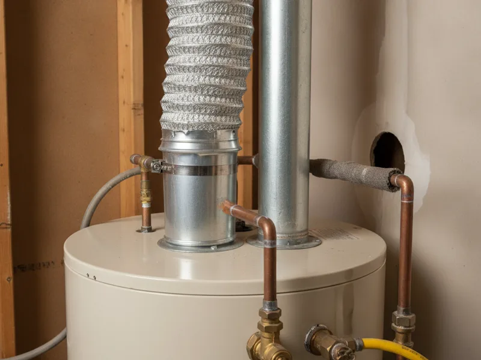

Gas Water Heater Installation in Armonk, NY
Whether you're replacing an aging gas water heater or switching over from electric, we handle the gas connection and plumbing safely, with clear pricing before we start any work.
- Licensed & Insured
- Upfront Pricing
- 15+ Years of Experience
- Clean, Respectful Technicians

Our installation process
We start with a quick conversation about your household's hot water needs and whether you're replacing an existing gas unit or switching from electric. That determines what size tank and what venting setup makes sense.
On-site, we inspect your existing gas line, venting, and water connections to confirm everything is sized correctly for the new unit. If you're switching from electric, this step matters even more, since a gas line may need to be run or extended to reach the water heater.
We give you a clear, upfront price before any work begins. Once you approve it, we remove the old unit, install the new one, connect the gas and water lines, and test for leaks and proper operation before we consider the job finished.

What affects the cost
A few things typically drive the price of a gas water heater installation: the size and type of unit (standard tank versus tankless), whether your existing gas line and venting can be reused or need modification, and whether this is a straightforward replacement or a new gas connection entirely.
Switching from electric to gas usually costs more upfront than a like-for-like replacement, since it involves running a new gas line and venting. Choosing between a standard tank and a tankless unit also affects the price — we'll walk you through the real cost difference for your specific home before you decide anything.
Local factors in Armonk
A lot of the calls we get for gas water heater installation fall into two groups: homeowners replacing an aging unit before it fails during a cold Westchester winter, and homeowners switching from electric to gas because it's more efficient to run, especially once heating and hot water demand both climb in January and February.
Older homes across Armonk and the surrounding area sometimes have gas lines or venting that were sized for a smaller or older unit. We check for this upfront so there are no surprises partway through the install.
Planning ahead
If your gas water heater is more than a decade old, showing rust near the base, or taking longer to heat water than it used to, it's worth planning a replacement before it fails outright — usually on the coldest night of the year, when you'd rather not be without hot water.
The U.S. Department of Energy publishes gas water heater efficiency guidance that's useful if you're deciding between a standard tank and a more efficient model. We're happy to walk through what fits your household and your budget.
If gas isn't the right fit for your home, we also handle switching to an electric water heater instead.
When to call a pro
Any gas water heater installation or replacement should go through a licensed plumber — the gas connection alone makes this a job for a professional, not a weekend project. Call us if you're planning a replacement, considering a switch from electric to gas, or noticing signs your current unit is on its way out.
Take a look at our other licensed gas services if you're also dealing with a gas line issue, or browse our complete list of services for everything else we handle.
Frequently asked questions
How long does a gas water heater installation take?
A straightforward replacement of an existing gas unit is usually completed in a single visit. Switching from electric to gas, or installing new venting, can take longer — we'll give you a realistic timeframe before we start.
Can you switch my water heater from electric to gas?
Yes, if your home has gas service available. It involves running a gas line and proper venting to the water heater location, which we'll assess and quote upfront.
How do I know what size gas water heater I need?
It depends on your household size and hot water usage. We'll talk through your daily habits — showers, laundry, dishwasher — to recommend the right tank size or tankless capacity.
Do you remove and dispose of the old water heater?
Yes, removal and disposal of your old unit is part of the installation.
Is a tankless gas water heater worth the extra cost?
It depends on your household and hot water demand. We can walk through the tradeoffs so you can decide what's right for your home rather than guessing.
Will you test for gas leaks after installation?
Always. We test every connection for leaks and confirm proper operation before we consider the job complete.